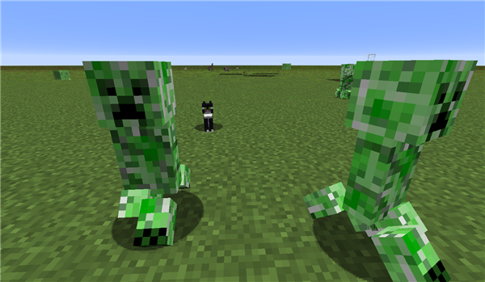

【小白攻略】敌对生物之爬行者篇
2019-11-25 作者：矮人
大家好啊！这里是喜欢捕捉小怪兽的攻略君！在之前的攻略中，我成功捕捉了最常见的五个坏家伙，并且已经向大家介绍了其中的三种，在本次的攻略中，我将会为大家介绍爬行者这个坏家伙，普及一下它的习性以及特点，好让大家在日后的居家生活中能够从这个坏家伙手中保护自己。
现在，让我们了解一下本次要介绍的这个坏家伙吧！它是各位小伙伴们居家生活中最可怕的梦魇！一阵轻轻传来的嘶嘶声之后，便是无数小伙伴们的家在一声响亮的爆炸声中化为乌有！没错！本次介绍的主角就是《我的世界》的代表生物之一——爬行者！

通过玻璃观察的爬行者
爬行者通体绿色，面目扭曲，而且对你充满了执念，它总是会在夜晚，或者是亮度低于七的方块上生成，一心一意想着和你来一次轰轰烈烈的会面。为此，它甚至会主动跳下高台与悬崖，只为给你来一次爆炸登场。
正在准备爆炸的爬行者
而且更可怕的是，爬行者不属于亡灵生物，因此它不会因为日光的照射而自然死亡，也不会像蜘蛛那样因为太阳降临而归于平静，它依然渴望着与你来一次火花四溅的拥抱。因此，小伙伴们注意听了！以下是四点需要你注意的，关于爬行者的种种事情：
①往往在距你一两米远时，爬行者就会开始激动地准备爆炸，它的自爆完全不会在意你是否注意到它的存在。因此要是小伙伴要是在矿洞中突然听到了嘶嘶声，最好的应对就是快速逃跑。如果能够在它爆炸之前离开还好，最多只会损失一些矿物。但如果躲不开的话可能会被炸下岩壁，甚至被爆炸引出的岩浆吞噬。
爬行者爆炸后留下的坑洞
②爬行者体内充满了不稳定的火药——这点已经是被大量的冒险家与解刨案例所证实的，因此它们其实也是极佳的火药来源，每一只爬行者都可以掉落一到两堆火药，如果通过附魔武器击杀爬行者可能会获得更多收获。但要知道，通过自爆而死亡的爬行者是不会掉落任何火药的——它们体内的火药早已被消耗干净，因此如果要高效的获取火药，一把好弓与大量的箭只是必要的。

被击杀后掉落火药的爬行者
③爬行者体内充满了火药，因此它们可以被打火石引爆……是的，这是真的。
被打火石点燃后发生爆炸变形的爬行者
爆炸之后留下的坑洞
特别值得一提的是，如果一个爬行者身上带有药水效果，那么当这个爬行者自爆或者被引爆之后，会在爆炸处留下一处持续时间不久的滞留药水效果。
带有力量效果的爬行者
带有力量效果的爬行者爆炸之后留下的带有力量药水滞留效果的爆炸坑洞。
④如同闪电会让猪变成僵尸猪人一样，闪电也会给爬行者带来超级力量，让他变成高压爬行者。此时的爬行者周身覆盖着蓝色的雷电特效，同时爆炸威力大大增强！不过除此之外，高压爬行者与爬行者没有什么区别。一样可以被打火石引爆。
爬行者变成的高压爬行者，可以明显看出图中高压爬行者外表覆盖着蓝色的雷电
高压爬行者爆炸之后巨大的坑洞，可以与画面右上方的三个普通爬行者爆炸坑洞对比大小。
讲述了这么多爬行者的特点，可能有小伙伴要问了，这么可怕的怪物，我们除了用弓箭对付它们以外，还应该怎么做呢？
答案就是最后一个关于爬行者的小秘密！它们怕猫！无论是未驯化的豹猫，还是被驯养的家猫，都会让爬行者丧失一切与你见面的动力，垂头丧气的逃离。
恐惧家猫而仓皇逃窜的爬行者

同样恐惧豹猫而逃跑的高压爬行者
以上就是关于爬行者的全部攻略内容，不知道大家有没有学到关于如何应对爬行者的小知识呢？攻略君会继续为大家介绍更多关于《我的世界》生物的小知识，祝大家在游戏中游玩愉快！这里是攻略君，让我们下次再见！